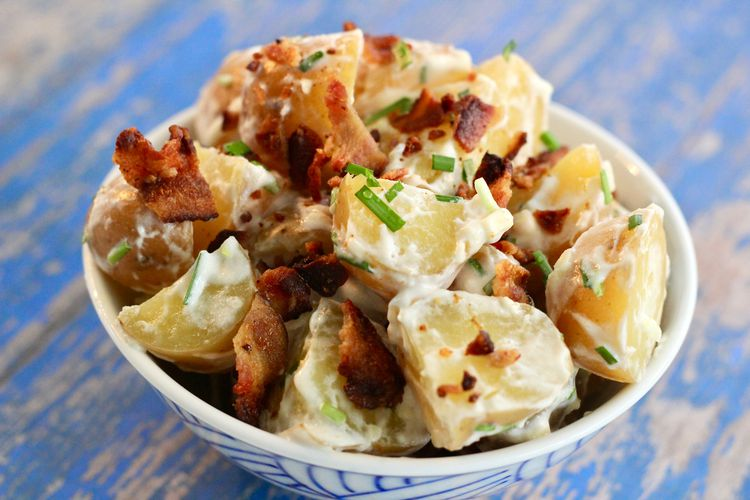

Lasagna

World's Best Potato Salad
This is a great buttermilk potato salad recipe for people like me, who really don't care for normal potato salad.
Ingredients
- 2 pounds baby potatoes, cut into quarters
- ¼ cup creamy salad dressing (such as Miracle Whip®)
- ¼ cup sour cream
- ¼ cup buttermilk
- ¼ cup chopped fresh chives
- 1 tablespoon minced garlic
- 1 cup shredded Cheddar cheese
- 10 slices cooked bacon, crumbled, or more to taste
Steps
- Place potatoes into a large pot and cover with salted water; bring to a boil. Reduce heat to medium-low and simmer until tender, about 15 minutes. Drain.
- Combine salad dressing, sour cream, buttermilk, chives, and garlic in a large bowl. Add potatoes and Cheddar cheese and mix lightly. Chill for 2 1/2 hours in the refrigerator.
- Top potato salad with bacon before serving.